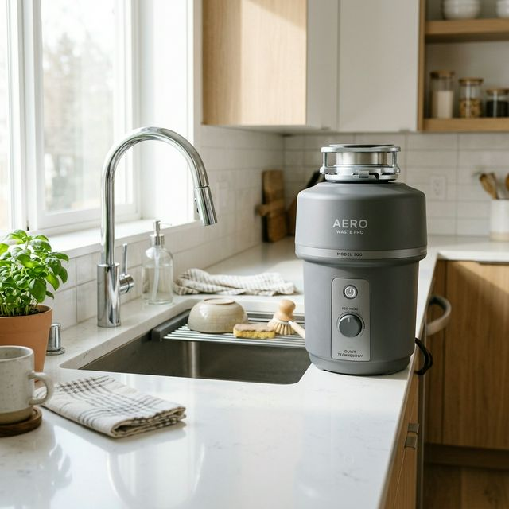
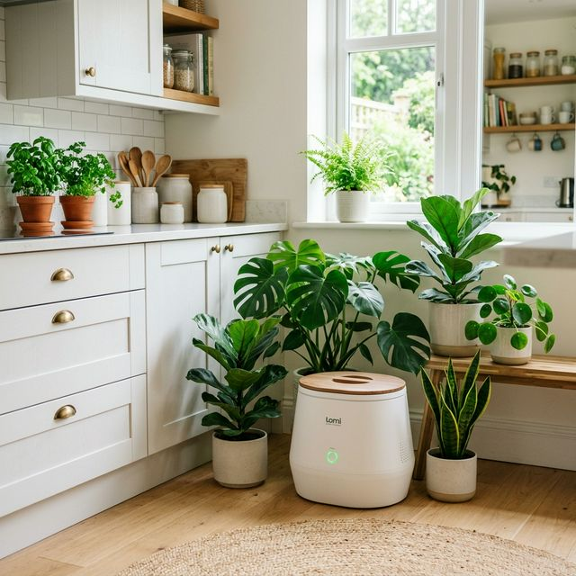

가전제품 판매점이나 라이브 커머스를 보면 모두 자기 제품이 냄새가 안 나고 벌레가 꼬이지 않는다고 홍보합니다. 하지만 나의 라이프스타일(가족 구성원, 주로 먹는 식단, 쓰레기가 나오는 빈도)을 고려하지 않고 마케팅 문구만 믿고 사면 거대한 고철 덩어리로 전락하기 십상입니다.
| 비교 항목 | 건조분쇄형 (대표: 스마트카라) | 미생물 발효형 (대표: 린클) |
|---|---|---|
| 작동 원리 | 고온의 열로 쪄버린 뒤 맷돌처럼 갈아서 가루로 만듦 | 흙 속에 사는 전용 미생물이 음식물을 분해하여 없앰 |
| 쓰레기 버리는 주기 | 자주 (다 모아서 필터 냄새 안 날 때 주기적 비움) | 매우 김 (미생물이 먹어 치워 흙이 쌓이면 삽으로 퍼냄) |
| 장점 | 부피 감소율이 엄청남(90% 이상), 닭 뼈나 조개껍데기 같은 단단한 쓰레기 제외 대부분 소화 가능 | 음식물을 찔끔찔끔 그때그때 바로 버릴 수 있음(수시 투입), 친환경적 |
| 단점 | 탈취 필터를 정기적으로 구매/교체해야 하는 유지비 발생 | 미생물을 '키워야' 하므로 맵거나 짠 국물(양념)은 씻어서 버려야 하는 까다로움 |
이제 각 카테고리의 끝판왕으로 불리는 대표 대장주 모델 2가지를 상세히 알아보겠습니다.
음식물 처리기 시장에 '가전'이라는 고급스러운 이미지를 심어준 주인공입니다. 스마트카라 400 Pro 모델은 밀폐된 보관통에 며칠 치 음식물을 모았다가 일주일 중 쓰레기가 가득 찼을 때 전원 버튼을 한 번 누르면 고온 건조와 강한 모터의 힘을 통해 음식물을 바싹 마른 커피가루 형태로 만들어버리는 기기입니다.

무엇보다 음식물이 부패하면서 내뿜는 악취를 차단하는 능력과 부피 감량률(최대 95%)이 업계 최고 수준입니다. 디자인도 네스프레소 커피 머신처럼 모던하게 빠져 주방 아일랜드 식탁 위에 올려놓고 써도 전혀 이질감이 없습니다. 게다가 세척기능까지 자체 탑재되어 있어, 한 바퀴 돌고 나면 내부 통이 뽀송뽀송해집니다.
만약 집에 아이들이 있거나 자연 친화적인 삶을 지향하는 3~4인 이상의 다인 가구라면 린클 프라임(Reencle Prime)을 고려하셔야 합니다. 안쪽에 활발하게 배양된 고성능 미생물(푸드클리너)이 들어있어, 바나나 껍질이나 밥알을 툭 던져 넣기만 하면 하루 이틀 만에 소리 소문 없이 분해해 흙으로 만들어 버립니다.
건조분쇄형과 가장 큰 차이점은 '수시 투입'이 가능하다는 것입니다. 요리를 하면서 나오는 자투리 채소를 그냥 뚜껑을 열고 휙휙 던져 넣고 닫으면 24시간 미생물이 알아서 분해합니다. 다 차면 삽으로 조금씩 퍼내 일반쓰레기나 화분 퇴비용으로 버리면 되니 비우는 주기도 몇 달에 한 번 꼴로 엄청나게 깁니다.
4월을 넘어가면 이미 늦습니다. 습한 여름이 오기 전 음식물 처리기는 로켓과 같은 속도로 품절 대란을 겪거나 공급가액이 슬그머니 올라가는 경우가 다반사입니다. 만약 여러분이 배달음식을 애용한다면 스마트카라의 강력한 분쇄력을, 매일 집밥을 짓는 가정주부라면 수시로 던져 넣을 수 있는 무한대의 포용력을 가진 린클 프라임을 선택하는 것이 정답에 가깝습니다. 스트레스받지 말고 지금 당장 지긋지긋한 벌레와 악취의 굴레에서 벗어나 깨끗하게 관리되는 주방의 삶을 누려보시길 바랍니다!